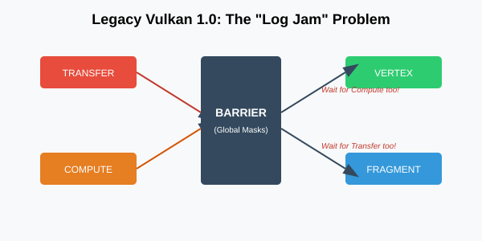
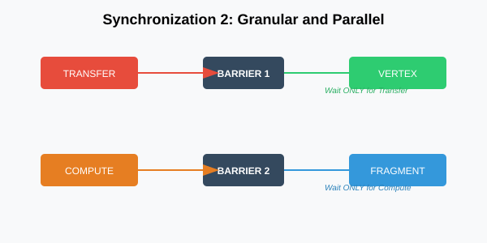

The Synchronization 2 Advantage
Introduction
In the early days of Vulkan 1.0, defining dependencies was a fragmented and often frustrating process. You had to juggle multiple structures like VkMemoryBarrier, VkBufferMemoryBarrier, and VkImageMemoryBarrier. These structures weren’t just numerous; they were also functionally separate, which meant the logic of your synchronization was spread across several different parts of your code.
Synchronization 2 (VK_KHR_synchronization2), which is now core in Vulkan 1.3, fundamentally changes this. It unifies these disparate barriers into a single, cohesive structure: vk::DependencyInfo.
The Fragmented Past: Why Legacy Was Hard
To appreciate the advantage of Synchronization 2, we have to look at what we’re leaving behind. In the legacy Vulkan 1.0 API, a pipeline barrier was a single function call that took three separate arrays of barriers: global, buffer, and image.
// Legacy Vulkan 1.0 (Still works, but we don't like it)
vkCmdPipelineBarrier(
commandBuffer,
srcStageMask, // Global stage mask for ALL barriers
dstStageMask, // Global stage mask for ALL barriers
dependencyFlags,
memoryBarrierCount, pMemoryBarriers,
bufferMemoryBarrierCount, pBufferMemoryBarriers,
imageMemoryBarrierCount, pImageMemoryBarriers
);Notice the problem? The srcStageMask and dstStageMask were passed as arguments to the function, not as part of the individual barrier structures. This meant that if you had two different image transitions in the same call—say, one from Transfer to Fragment Shader and another from Compute to Vertex Shader—you had to combine all those stages into a single, broad mask.
This led to "over-synchronization." By merging the stages at the function level, you were inadvertently telling the GPU to wait for all the source stages to finish before any of the destination stages could start. You were creating a bottleneck where one didn’t need to exist.

The "Chain of Intent": Unification with vk::DependencyInfo
Synchronization 2 solves this by moving the stage masks into the barrier structures themselves. In our engine, we use vk::DependencyInfo, which acts as a container for all our synchronization needs.
When we unify synchronization, we aren’t just cleaning up the syntax. We are grouping the entire "intent" of the dependency in one place. With vk::DependencyInfo, each individual vk::ImageMemoryBarrier2 or vk::BufferMemoryBarrier2 contains its own srcStageMask and dstStageMask.
// Synchronization 2 (The Modern Way)
vk::ImageMemoryBarrier2 imageBarrier{
.srcStageMask = vk::PipelineStageFlagBits2::eColorAttachmentOutput,
.srcAccessMask = vk::AccessFlagBits2::eColorAttachmentWrite,
.dstStageMask = vk::PipelineStageFlagBits2::eFragmentShader,
.dstAccessMask = vk::AccessFlagBits2::eShaderRead,
// ... layout transitions, image handles ...
};
vk::DependencyInfo dependencyInfo{
.imageMemoryBarrierCount = 1,
.pImageMemoryBarriers = &imageBarrier
};
commandBuffer.pipelineBarrier2(dependencyInfo);
This is a massive win for human readability. When you look at that imageBarrier block, you see a complete "handshake." You know exactly what work is finishing (src) and exactly what work is waiting (dst). There’s no need to hunt through function arguments or global variables to find the other half of the dependency.
Granular Control with 64-bit Masks
Another technical reason for the switch was simple math. The original Vulkan 1.0 flags were 32-bit bitmasks. As Vulkan evolved, we added Ray Tracing, Mesh Shading, Video Encoding, and more. We were literally running out of bits.
With vk::PipelineStageFlagBits2, we’ve moved to 64-bit masks. This gives us the headroom to target specific hardware units with surgical precision.
The Power of "None"
In legacy Vulkan, if you didn’t need a memory dependency (just an execution one), you often had to pass 0 or use confusing flags like BOTTOM_OF_PIPE. In Sync 2, we have an explicit vk::PipelineStageFlagBits2::eNone and vk::AccessFlagBits2::eNone.
If you’re doing a layout transition that doesn’t require a memory flush (very rare, but possible), or if you just want to be absolutely clear that a certain barrier has no effect on a specific stage, eNone is your best friend. It makes the code self-documenting.
Sync 2 as a Mental Model
Think of Synchronization 2 not as a new API, but as a better way to talk to the GPU. In the old system, you were shouting broad commands at the hardware: "EVERYONE STOP UNTIL THE RENDERING IS DONE!"
In Synchronization 2, you’re having a more nuanced conversation: "Hey, Color Attachment Output, once you’re done writing this specific image, let the Fragment Shader know it’s safe to start reading it."
This "human-to-human" level of clarity is why we’ve built our entire engine around these structures. It reduces the cognitive load on you, the developer, and it gives the driver the exact information it needs to keep the GPU’s "pipeline" full of work.
Putting it Together in the Engine
In a real-world engine, synchronization isn’t just about single transitions; it’s about orchestrating the entire flow of data between passes. A perfect example of the Synchronization 2 "win" can be found in our Renderer class, specifically during a complex operation like a reflection pass.
When rendering reflections, we often need to transition multiple resources at once—for example, a color buffer and a depth buffer. In the legacy API, these would be forced into a "log jam" where both would have to wait for the union of all stages. With Synchronization 2, we can batch them while maintaining their unique requirements.
void Renderer::renderReflectionPass(vk::raii::CommandBuffer& cmd) {
// Transition reflection color to COLOR_ATTACHMENT_OPTIMAL
vk::ImageMemoryBarrier2 toColor{
.srcStageMask = vk::PipelineStageFlagBits2::eColorAttachmentOutput,
.srcAccessMask = vk::AccessFlagBits2::eColorAttachmentWrite,
.dstStageMask = vk::PipelineStageFlagBits2::eColorAttachmentOutput,
.dstAccessMask = vk::AccessFlagBits2::eColorAttachmentWrite,
.oldLayout = vk::ImageLayout::eShaderReadOnlyOptimal,
.newLayout = vk::ImageLayout::eColorAttachmentOptimal,
.image = *reflectionColor,
.subresourceRange = { vk::ImageAspectFlagBits::eColor, 0, 1, 0, 1 }
};
// Transition reflection depth to DEPTH_ATTACHMENT_OPTIMAL
vk::ImageMemoryBarrier2 toDepth{
.srcStageMask = vk::PipelineStageFlagBits2::eEarlyFragmentTests,
.srcAccessMask = vk::AccessFlagBits2::eDepthStencilAttachmentWrite,
.dstStageMask = vk::PipelineStageFlagBits2::eEarlyFragmentTests,
.dstAccessMask = vk::AccessFlagBits2::eDepthStencilAttachmentWrite,
.oldLayout = vk::ImageLayout::eUndefined,
.newLayout = vk::ImageLayout::eDepthAttachmentOptimal,
.image = *reflectionDepth,
.subresourceRange = { vk::ImageAspectFlagBits::eDepth, 0, 1, 0, 1 }
};
// The Win: Batching unique intents into a single call
std::array barriers{ toColor, toDepth };
vk::DependencyInfo dependencyInfo{
.imageMemoryBarrierCount = static_cast<uint32_t>(barriers.size()),
.pImageMemoryBarriers = barriers.data()
};
// One call, but the driver knows 'toColor' only cares about
// ColorAttachmentOutput, while 'toDepth' only cares about EarlyFragmentTests.
cmd.pipelineBarrier2(dependencyInfo);
// Now we can safely begin our reflection rendering
// ...
}To see the "win" here, let’s look at the legacy alternative for that same renderReflectionPass operation. You would have been forced to combine your stage masks at the function level:
// Legacy Vulkan 1.0 equivalent - The "Log Jam"
vk::ImageMemoryBarrier legacyToColor{
.srcAccessMask = vk::AccessFlagBits::eColorAttachmentWrite,
.dstAccessMask = vk::AccessFlagBits::eColorAttachmentWrite,
.oldLayout = vk::ImageLayout::eShaderReadOnlyOptimal,
.newLayout = vk::ImageLayout::eColorAttachmentOptimal,
.image = *reflectionColor,
.subresourceRange = { vk::ImageAspectFlagBits::eColor, 0, 1, 0, 1 }
};
vk::ImageMemoryBarrier legacyToDepth{
.srcAccessMask = vk::AccessFlagBits::eDepthStencilAttachmentWrite,
.dstAccessMask = vk::AccessFlagBits::eDepthStencilAttachmentWrite,
.oldLayout = vk::ImageLayout::eUndefined,
.newLayout = vk::ImageLayout::eDepthAttachmentOptimal,
.image = *reflectionDepth,
.subresourceRange = { vk::ImageAspectFlagBits::eDepth, 0, 1, 0, 1 }
};
std::array legacyBarriers{ legacyToColor, legacyToDepth };
// NOTICE: The stage masks are passed to the function, not the barriers!
cmd.pipelineBarrier(
vk::PipelineStageFlagBits::eColorAttachmentOutput | vk::PipelineStageFlagBits::eEarlyFragmentTests, // srcStageMask (Union)
vk::PipelineStageFlagBits::eColorAttachmentOutput | vk::PipelineStageFlagBits::eEarlyFragmentTests, // dstStageMask (Union)
{}, // dependencyFlags
nullptr, nullptr, legacyBarriers
);In this legacy version, you are forced to pass a single srcStageMask that is the union of eColorAttachmentOutput and eEarlyFragmentTests. This means the GPU would have to wait for both the color writes and the depth tests of all previous work to finish before it could even start transitioning either image.
With Synchronization 2, if the depth tests finish early, the driver can begin the toDepth transition immediately, even if the color hardware is still busy. This keeps the GPU’s "log jam" from forming, allowing different parts of the hardware to work at their own pace.
This code typically lives inside your frame recording logic, often in a dedicated pass function like renderReflectionPass, just before calling beginRendering. By placing the synchronization logic right where the resource is needed, and grouping related transitions into a single vk::DependencyInfo, you create a "Chain of Intent" that is both easy for you to read and optimal for the hardware to execute.
Implementation: Modernizing Simple Engine
While Simple Engine’s renderer has been largely modernized to use the `pipelineBarrier2 calls we’ve discussed, the codebase still contains "legacy islands" that we are in the process of refactoring. A prime example is the PhysicsSystem (physics_system.cpp), which still uses the old-style pipelineBarrier for synchronizing its compute dispatches.
If you look into PhysicsSystem::SimulatePhysicsOnGPU, you’ll see transitions that look like this:
// Legacy synchronization in PhysicsSystem
vulkanResources.commandBuffer.pipelineBarrier(
vk::PipelineStageFlagBits::eComputeShader,
vk::PipelineStageFlagBits::eComputeShader,
{},
vk::MemoryBarrier(vk::AccessFlagBits::eShaderWrite, vk::AccessFlagBits::eShaderRead),
nullptr, nullptr
);In the upcoming "Synchronization Upgrade" branch of Simple Engine, we will replace these with the cleaner vk::DependencyInfo and vk::BufferMemoryBarrier2. This will allow us to move away from global memory barriers and target the specific physics buffers, reducing the performance penalty on architectures with complex cache hierarchies.
In the next section, we’ll dive deeper into how to pick the right stages and flags to squeeze every last drop of performance out of the hardware.
Navigation
Previous: Execution vs. Memory Dependencies | Next: Refined Pipeline Stages